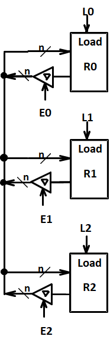
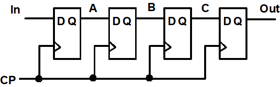
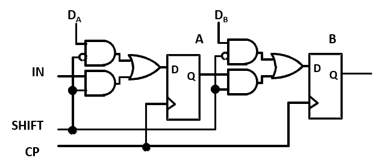
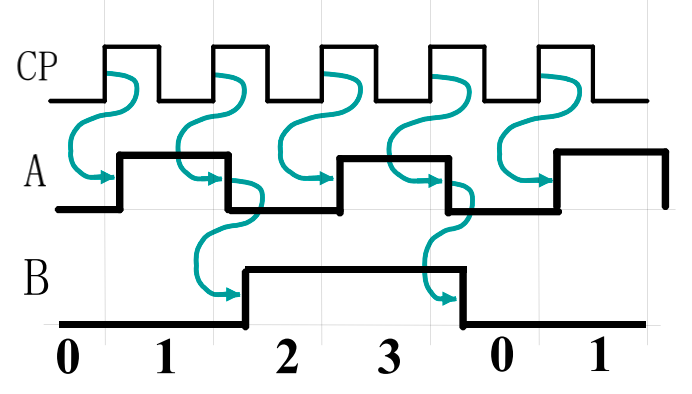
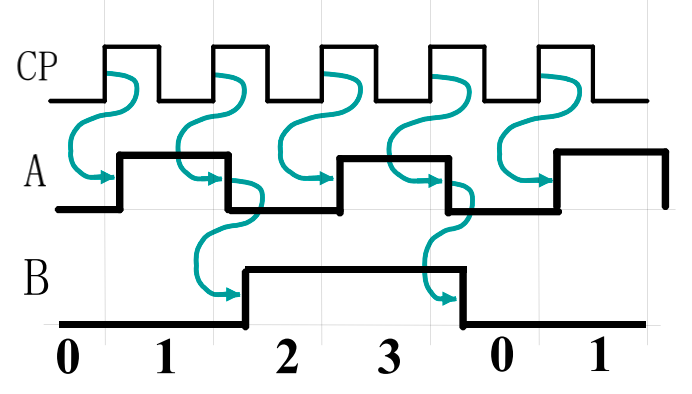
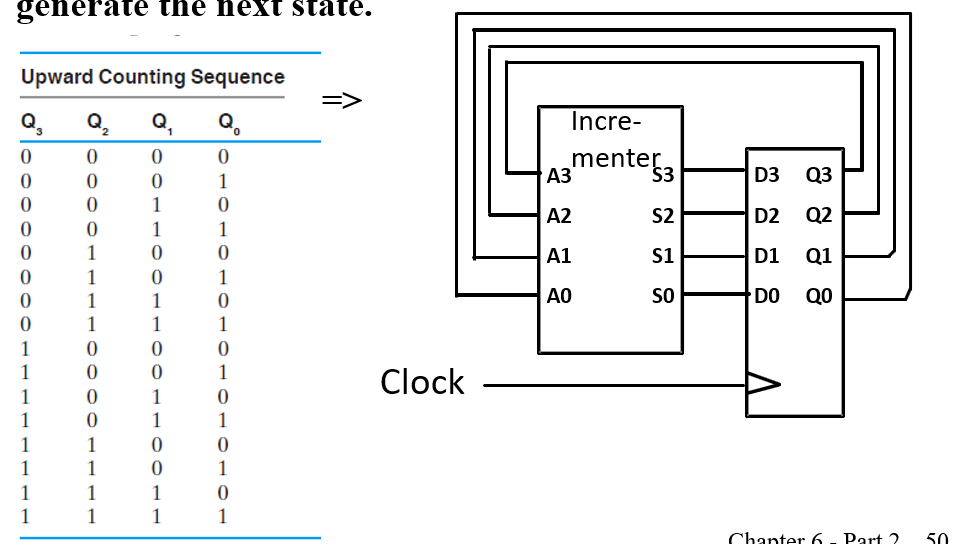
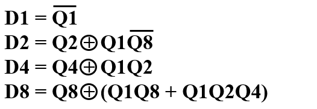
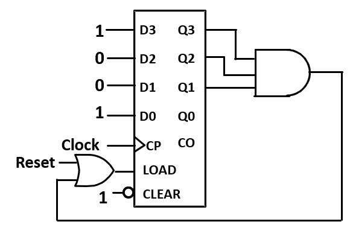

Chapter 6 Registers & Register Transfers
Register
保持信号在多个时钟周期不变
添加Load，Load为0时无论clock为何值，输出不变，Load为1时，输出随clock变化
- 方式一：直接加或门

然而，在门控时钟技术中，由于添加了一个额外的逻辑门，时钟脉冲到达 Control 的时候会出现额外的传播延时，即时钟偏移(clock skew)。而这微小的延时会导致在整个同步系统中，不同组件得到的时钟脉冲有偏差，而这是我们所不希望看到的。所以在实际设计中，我们应当避免或尽可能缩小时钟偏移。
- 另外一个做法是，在不希望它修改的时候，不断将它的输入载入，也就是保持不变。我们可以通过一个二选一多路复用器实现。
Register Cell Design
Assume that a register consists of identical cells.(每个位执行相同操作)
- Design representative cell for the register
- Connect copies of the cell together to form the register
- Applying appropriate "boundary conditions" to cells that need to be different and contract if appropriate
Specifications
- A register
- Data inputs to the register
- Control input combinations to the register e.g. 控制输入: Load, Shift, Add. 我们可以用三个引脚分别表示控制输入(not encoded, one-hot code)，也可以用两个引脚 S0 S1 的组合来表示控制输入(encoded)
- A set of register functions (typically specified as register transfers) 即规定控制输入的函数是对数据进行什么样的操作
- A hold state specification(e.g. If all control inputs are 0, hold the current register state)
Register Transfer Operations
The movement and processing of data stored in registers
- Three basic components:
- set of registers(源寄存器，目标寄存器)
- operations
- control of operations 监督操作序列的控制
- Elementary Operations -- load, count, shift, add, bitwise "OR", etc. Elementary operations called micro-operations
其中，最基础的那部分操作被称为微操作(micro-operation)，它们是实现复杂操作的基础，例如将 R1 的数据载入 R2，将 R1 和 R2 相加，或是自增 R1 等。它们通常以比特向量为载体并行实现的。
Register Notation
RTL:寄存器传输语言(Register Transfer Language)


-
$sl,sr$例子： R2<-sl R1 ，R1左移一位传给R2
-
example:如果 K1=1 那么将 R1 的信号传给 R2, 我们可以写为 K1:(R2←R1), 其中 R1 是一个控制变量，表明条件执行的发生是否发生。K1控制的是R2是否接收R1的信号，而非R1是否发送

Register Transfer Structures
1. Multiplexer-Based Transfers：基于多路复用器的传输
$K1:R0\leftarrow R1,K2\overline{K1}:R0\leftarrow R2 $,也就是$K1+K2$为真时R0会被更新


通过一系列one-hot编码决定选择哪个，其中 MUX 的 k∼(n−1) 实现了转移操作。
2. Multiplexer Bus
基于专用多路复用器的传输
基于共用多路复用器的传输
通过总线bus实现n选1多路复用器完成寄存器之间值的交换。门输入成本9/bit，多路复用器8个输入+1个输出
3. Three-State Bus 三态总线
The 3-input MUX can be replaced by a 3-state node (bus) and 3-state buffers. Cost is further reduced, but transfers are limited.
只有一个三态门被使能时，也就是只有一个三态门不处于高阻态。电路中所有都是该值。
减少接线，降低布线难度。
将寄存器和三态门封装在一起考虑，那么我们只需要一个外部引脚(n bits), 但多路复用器的方法需要两根位宽是 n 的引脚（因为三态门的外部引脚是可以双向传输数据的）
门输入成本：9（$3\times3$个三态门）

Shift Registers
使用触发器而不能使用锁存器（除极少特例）
- 右移

- 右移+并行输入 Parallel Load Shift Registers
- shift=0 并行输入
- shift=1 移位

- Shift为1，移位
- Shift为0，Load0，保持
- Shift为0，Load1，并行加载
双向位移寄存器（通过加入一个多路选择器实现）

对$S_1S_0$,00保持，01左移，10右移，11并行输入
其本质上就是添加了一个 MUX 来选择下一个时钟是继承 $(i+1)、(i-1)、D_i$还是$Q$
Counters
Ripple Counter
 

-
B频率是A一半。A输出取反作为B的时钟信号。 可以用做时钟分频。
-
上图中，下一个 FF 的时钟来自于上一个 FF 的输出取反，也就是对于上升沿触发的 FF 来说，下一个 FF 会在上一个 FF 的输出从 1 到 0 时自反，所以是正向计时(Upward Counting)； 反之，如果下一个 FF 的时钟来自于上一个 FF 的直接输出，也就是对于上升沿触发的 FF 来说，下一个 FF 会在上一个 FF 的输出从 0 到 1 时自反，所以是逆向输出(Downward Counting)；
- 缺点：每一个时钟信号传递都有延时，同时不能作为同步计数器。简单但不安全。
理论上，111之后应该变成000，但实际上：$111->110->100->000$

此外对于n bits, 最坏时间延迟是 $n\cdot t_{PHL}$ 速度会非常慢.
- 使用：越高级的触发器越不容易被触发，功耗低，可用于脉冲计数等场景。
Synchronous Counters 同步计数器

每次通过自增器+1
观察发现，位数增加时不利于化简，但$Q_n$取反当且仅当0~n-1均为1，因此可以采取以下与门链作为控制信号
使能为0相当于保持。 CO输出进位用于下一部分电路
问题：同样存在延迟。
解决方法：look ahead 用一个与门把所有低位接起来
symbol：

Other Counters
- Down Counter
- Up-Down Counter
- Parallel Load Counter
- Divide-by-n(Module n) Counter：十进制模9，时钟模5
Counter with Parallel Load
实现并行输入
Design Example: Synchronous BCD
- 状态表：

- 卡诺图化简

- 验证无用状态情况，发现不会死锁
Counting Modulo N
-
二进制计数器基础上，采取同步/异步清零
-
异步，通过clear（异步复位脚），计数达到N实时清零即可
- 同步，N-1时reset为1，在下一个上升沿清零
better choice

- 多位寄存器，分开设计，如设计时间，低位为模 10 计数器，高位为模 6 计时器，低位的
Carry Output既作为低位的同步清零信号，又是高位的Enable信号.
Serial Operations
串行：寄存器一次只接受一个二进制位，如果传输 n 位需要 n 个时钟周期。
需要的引线数量少，两个设备之间只需要一条线和一条地线就可以了。而且因为引线少，我们可以让其时钟频率达到非常高
当今高速传输如USB，以太网线等都使用串行
串行加法器：仅使用一位全加器与一个用于进位的触发器。The result is stored in the A register and the final carry in the flip-flop
Serial addition is a low cost way to add large numbers of operands, since a “tree” of full adder cells can be made to any depth, and each new level doubles the number of operands.
Other operations can be performed serially as well, such as parity generation/checking or more complex error-check codes.
Shifting a binary number left is equivalent to multiplying by 2. Shifting a binary number right is equivalent to dividing by 2.